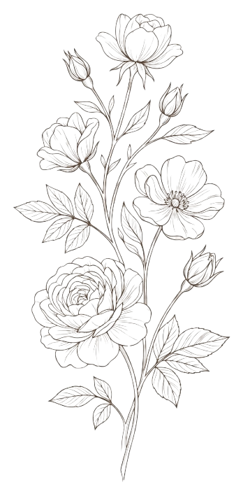
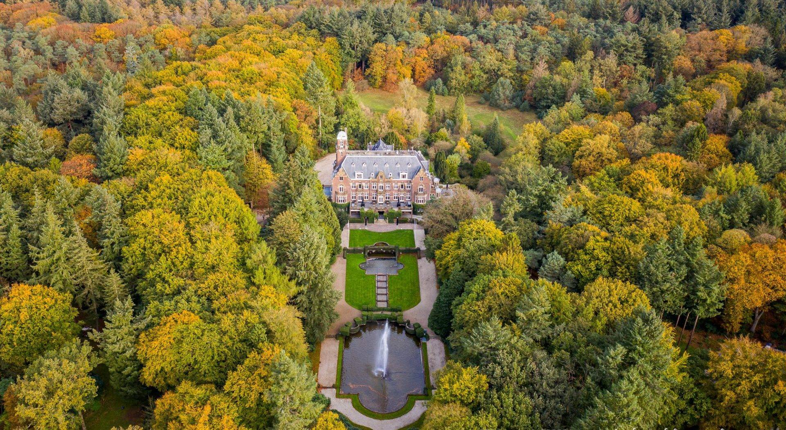
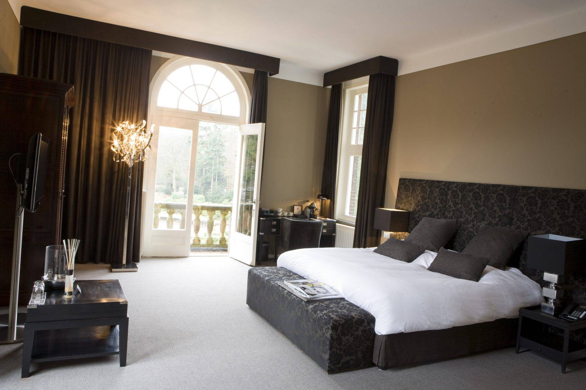
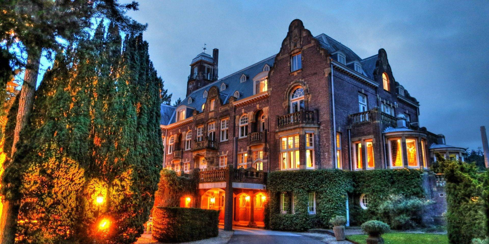
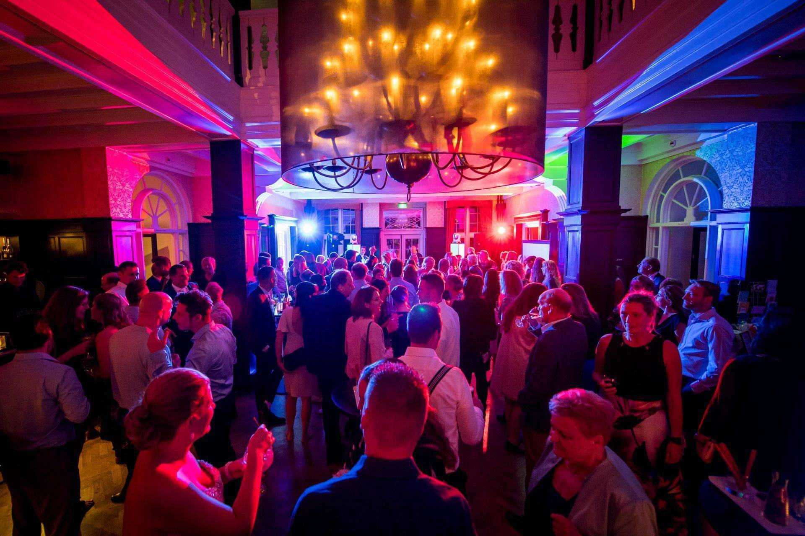
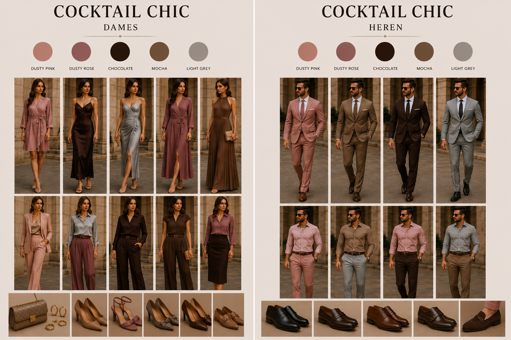
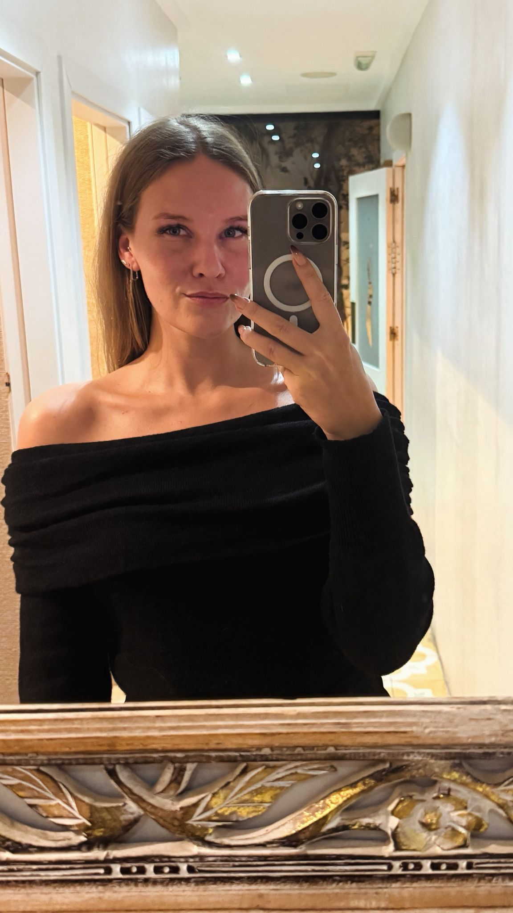

Lieve familie en vrienden,
Wat zijn we blij dat jullie deel uitmaken van deze bijzondere periode in ons leven.
Op 11 oktober 2026 geven wij elkaar het jawoord en we kunnen niet wachten om deze dag samen met jullie te vieren.
Via deze website vinden jullie alle informatie rondom onze bruiloft. Van het programma van de dag tot praktische details en antwoorden op veelgestelde vragen. Zo hopen we iedereen goed voor te bereiden op een onvergetelijke dag.
Voor onze trouwdag hebben we gekozen voor een prachtige locatie die perfect past bij wie wij zijn en bij de sfeer die we graag met jullie willen beleven. Een plek waar liefde, gezelligheid en samenzijn centraal staan: Kasteel Hooge Vuursche.
Bovenal kijken we ernaar uit om onze liefde te vieren met de mensen die ons het dierbaarst zijn. Jullie aanwezigheid maakt deze dag voor ons compleet en we voelen ons ontzettend gelukkig dat we dit bijzondere moment met jullie mogen delen.
Daarom willen we jullie vragen om vóór 1 augustus 2026 het RSVP-formulier in te vullen.
Veel liefs,




Een sprookjesachtige locatie midden in de bossen van Baarn. Van ceremonie tot feest vindt de volledige dag plaats op het landgoed.
Hilversumsestraatweg 14
3744 KC Baarn
Graag op tijd aanwezig, om 15:00 start namelijk de ceremonie. Voor die tijd dien je dus aanwezig te zijn en de mogelijkheid te hebben om plaats te nemen in de zaal.
De afgelopen maanden hebben we al veel vragen gehad over de dresscode van de bruiloft. We hopen deze vragen dan ook beantwoord te hebben met het kleurenpalet, de do's en don'ts en het moodboard. Wil je hulp bij het vinden van een outfit? Wij denken met liefde met je mee.


Voor vragen op de dag zelf kun je contact opnemen met:
+34 657 894 842
Wij sparen voor mooie toekomstplannen. Een bijdrage daaraan waarderen wij enorm.
♡
Laat ons voor 1 augustus weten of je komt. Bereid je outfit voor aan de hand van de dresscode.
Ja zeker, in het kasteel hebben we een beperkt aantal plekken beschikbaar. Daarom willen we graag van tevoren weten of mensen interesse hebben om na het feest een nacht in het kasteel te overnachten. Mocht je vragen hebben hierover dan kan je die altijd stellen aan ons (Lisa of Berend).
Als we op 1 augustus weten wie er interesse heeft, kunnen we kijken of er genoeg plek is. Mocht er te weinig plek zijn, dan hebben we ook nog een optie om de hoek van het kasteel. Dit zullen wij uiteraard dan met jullie delen.
We vinden het heel bijzonder als iemand iets wil bijdragen of een woordje wil doen tijdens de bruiloft. Omdat er maar beperkte ruimte in het programma is, vragen we je dit uitsluitend in overleg en na afstemming met onze ceremoniemeester (Maxime Mounoury) te doen.
Onze bruiloft vindt volledig binnen plaats. Tijdens de borrel en het feest kun je natuurlijk altijd even naar buiten om een luchtje te scheppen.
Om onze trouwdag in intieme kring te kunnen vieren, hebben wij de gastenlijst zorgvuldig samengesteld. Daarom is de uitnodiging alleen geldig voor de persoon of personen die op de uitnodiging genoemd worden.
Hoewel jullie weten dat wij gek zijn op jullie kinderen, hebben wij ervoor gekozen om geen kinderen uit te nodigen, zodat alle volwassenen optimaal kunnen genieten van deze dag.
Op het landgoed kan je gratis parkeren, bij het koetshuis is een parkeerterrein en ook bij het kasteel. Totaal kunnen er 150 auto's parkeren op eigen terrein en kan er ook (gratis) geparkeerd worden op de openbare weg. Er zijn laadpalen beschikbaar op beide parkeerterreinen.